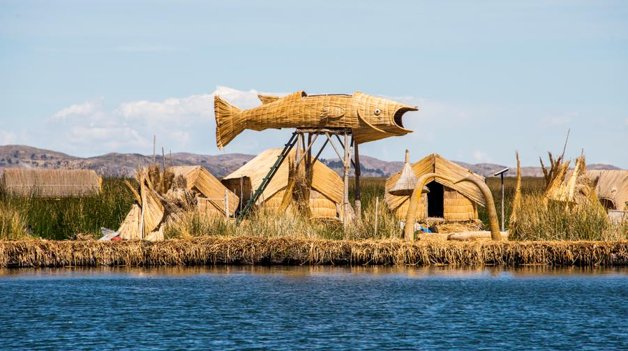

El pez de totora es una figura artesanal elaborada con totora, una planta característica de las zonas cercanas al lago Titicaca. Representa la creatividad de las comunidades andinas y el uso tradicional de este recurso natural para crear diferentes objetos y artesanías. Este modelo busca mostrar la importancia de la totora como parte de la cultura y las tradiciones de la región.